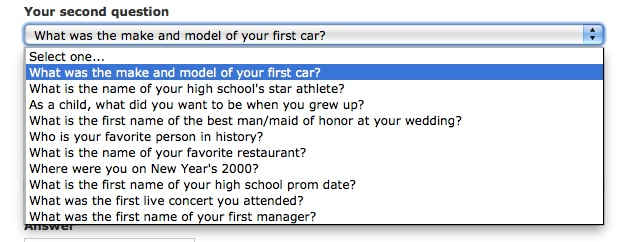

Many websites use “secret answers” to reinforce security. A secret answer is an answer that only the user knows – it belongs to its private history – and that is very difficult to guess. A first generation of “secret answers” apparently was too naïve (“What is your mother’s maiden name?”). The new generation requires answers that are very difficult to find – but then, even for the user.
Your high school star athlete? (Was she swimmer Novella Calligaris or tennis player)? And what about: Your favorite person in history? Your favorite restaurant? We do not even know if there are answers to these questions. Human preferences are inherently unstable. Moreover, memory is not safe, so better not just give an answer at random, hoping to remember it for next time.
Sure enough, if there aren’t answers, one may claim that the verification system is extremely secure – by definition no one, not even the authorized user, will be able to enter the website.
